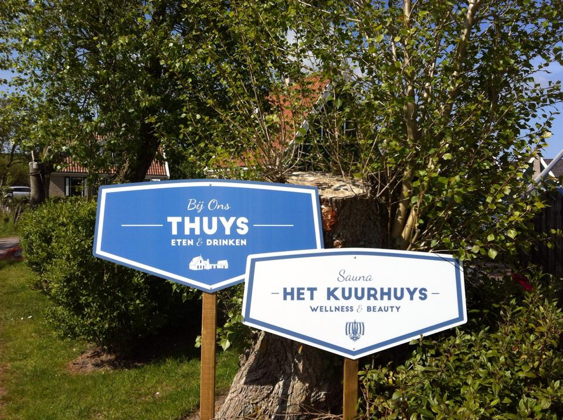

Recreatiepark Wiringherlant, Hippolytushoef
Bij Ons Thuys
Restaurant onderaan de dijk en direct aan de Waddenzee. Voor koffie met gebak, een lunch, een borrel of een avond uit eten.
Iedereen is welkom
Op recreatiepark Wiringherlant vind je onderaan de dijk en direct aan de Waddenzee restaurant Bij Ons Thuys.
Het is een perfecte locatie waar je terecht kunt voor een bakje koffie met een gebakje, lunch, een borrel met een hapje erbij of om ’s avonds te komen dineren. We staan voor laagdrempeligheid en gezelligheid. Je kunt bij ons zowel terecht op het terras als in het restaurant, en ook voor feesten en partijen.
Wij heten je van harte welkom Bij Ons Thuys!
- Koffie met gebakBinnen of op het terras
- LunchZaterdag en zondag vanaf 12:00
- Borrel met een hapjeGezellig, met wat lekkers erbij
- DinerVan carpaccio tot sliptongen

Iets te vieren?
Wanneer je iets te vieren hebt of met een groot gezelschap wilt komen, ben je bij ons aan het juiste adres. Bij Ons Thuys heeft vele mogelijkheden voor het organiseren van:
- Feesten
- Partijen
- Vergaderingen
- Bruiloften
Graag maken we van tevoren een afspraak met je om de wensen in kaart te brengen. Daarna stellen we een passende offerte op.
Openingstijden
| Maandag | Gesloten |
|---|---|
| Dinsdag | Gesloten |
| Woensdag | Gesloten |
| Donderdag | vanaf 16:00 |
| Vrijdag | vanaf 16:00 |
| Zaterdag | vanaf 12:00 |
| Zondag | vanaf 12:00 |
Let op: de keuken sluit om 20:30.
Reserveren? Graag even bellen.
0227-511312Route & contact
Restaurant Bij Ons ThuysNoordstroëerweg 1
1777 NG Hippolytushoef
Volg vanaf de N99 de borden recreatiepark Wiringherlant. Bij Ons Thuys ligt op het recreatiepark, in het plaatsje Stroe.
0227-511312
info@bijonsthuys.nl
